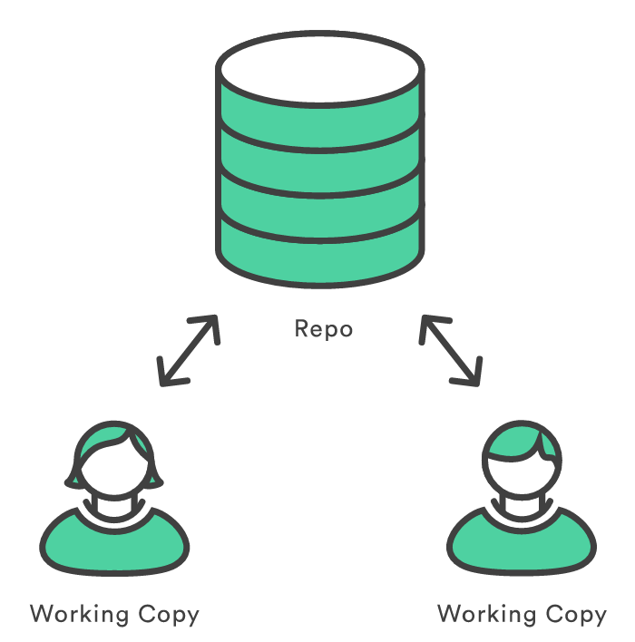
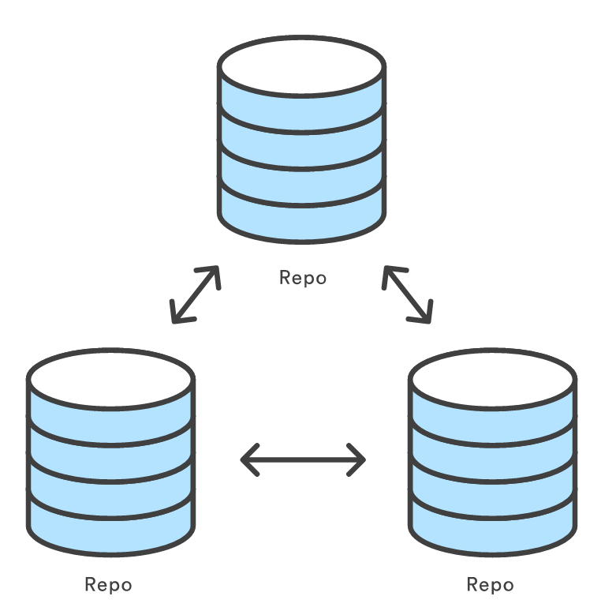

Created by Raúl Anatol / @raulanatol
Conflictos entre trabajadores
Diferentes entornos de trabajo
Rollbacks
Forks
Sistemas centralizados
Sistemas distribuidos
VCS distribuido
Creado por Linus Torvalds
Más de 10 años de historia
Rápido
Robusto
No requiere conexión a internet
Sincronización de cambios (eclipsado)
Merge
Workspace
Index
(Stage)Stash
HEAD
(local repo)tu identidad
$ git config --global user.name "John Doe"
$ git config --global user.email johndoe@example.com
editor
$ git config --global core.editor emacs
editor de diferencias
$ git config --global merge.tool vimdiff
$ git config --list
user.name=Scott Chacon
user.email=schacon@gmail.com
color.status=auto
color.branch=auto
color.interactive=auto
color.diff=auto
...
$ git config user.name
$ git config {clave}
Scott Chacon
iniciar proyecto
$ git init
estado
$ git status
mover al stage
$ git add
commit
$ git commit
bbdd.properties
database_name='desarrollo'
database_username='raul'
database_password='mi_password_superseguro'
database_host='127.0.0.1'
crear rama
$ git branch nombre_de_la_rama
mover hacia una rama
$ git checkout nombre_de_la_rama
borrar una rama
$ git branch -d nombre_de_la_rama
mover y crear en un paso
$ git checkout -b nombre_de_la_nueva_rama
mezclar
$ git merge
lista de cambios a resolver
$ git mergetool
lista etiquetas
$ git tag
filtrar busqueda
$ git tag -l 'v0.1*'
cierre versión
$ git tag -a v0.2
cierre versión específica
$ git tag -a v0.2 8bc431s